UX Team Identity
Building a brand system, a team manifesto and a gamification framework for a 50-person design team
Neoris's UX team (~50 designers) had an outdated identity and, more fundamentally, no shared visual language or way to make belonging to the team tangible.
Instead of a logo refresh, I facilitated co-creation sessions with a good part of the team (closely with a core group of ~5 designers) and delivered a full brand system, a manifesto, and a gamification framework (the UX Passport).
The brand was adopted immediately and drove a visible spike in participation at the weekly team meeting; it's still in use today after EPAM acquired Neoris.
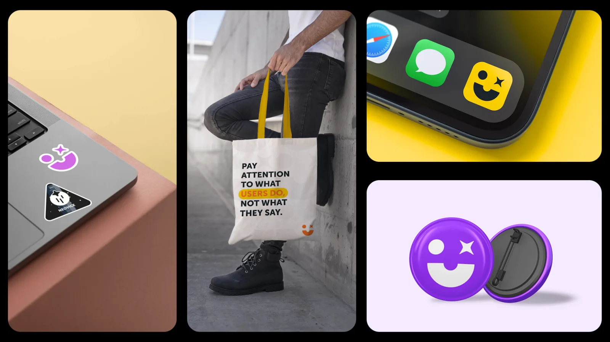
The project
The Neoris UX team (~50 designers across content, research, product, UI and service design) needed an updated visual identity. The existing one was outdated and didn't reflect who the team had become.
But the real problem wasn't the logo: the team lacked a shared visual language, a clear definition of roles and levels, and anything that made belonging to the UX team feel tangible. There was no system connecting how the team presented itself, how it grew, or how it celebrated its own work.
My role
I was asked to refresh the team's visual identity. I took it further: instead of delivering a logo update, I designed a complete brand system, facilitated collaborative sessions with the team to build it together, and proposed a gamification framework to reinforce culture and professional growth.
All of this while working full-time as the sole product designer on the CEMEX driver app.
Understanding ourselves
Before designing anything visual, I needed to understand what the team valued and how they saw themselves. I ran collaborative sessions open to the whole team, working most closely with a core group of designers. The process had three principles:
Open participation
A safe space where everyone felt comfortable sharing ideas, opinions and feedback.
Structured collaboration
Guided activities (moodboards, voting, references) to turn diverse inputs into clear insights.
Actionable outcomes
Translating discussions into defined visual directions and next steps.
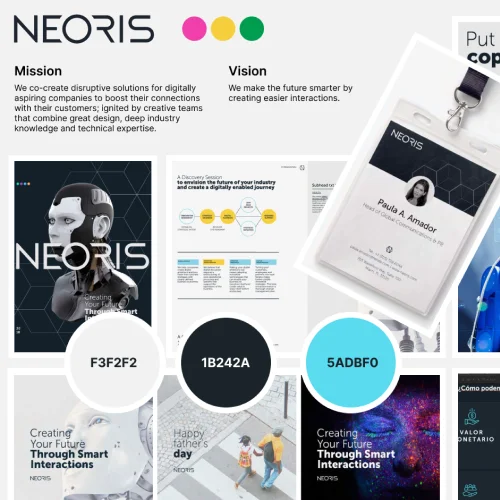
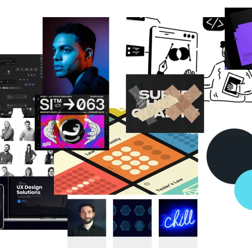
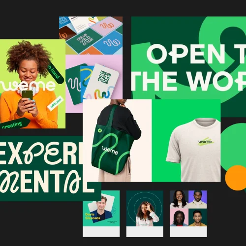
The project had three layers, each building on the previous one:
Brand identity system
Not just a logo: a complete brand book covering symbol, typography, color palette, color usage, tone of voice, iconography, photography style, shapes, profile photo guidelines, roles and levels, ethics and responsibility framework, and a team manifesto. Every section was designed to ensure the team's identity was consistent across all touchpoints.
Co-creation as the method
The identity wasn't imposed top-down. I facilitated sessions where the team explored visual styles, voted on directions, and shaped the brand together. The result resonated because the people who would live with it helped build it.
Gamification framework
With the identity in place, I proposed a system to reinforce culture and growth: the UX Passport. A personal record where each team member tracks their career path, achievements and milestones through themed badges. The goal was to make engagement, collaboration and professional growth visible and rewarding.
The brand book
A complete document covering every element of the team's visual identity: from logo usage rules to photography style to ethical principles. This became the single source of truth for how the UX team presents itself.
Brand book · 1/1
The symbol
I designed the team's logo from scratch. A minimalist face built from three elements: a "U" representing the user at the center of our focus, a circle interpreted as a planet for the universality of our solutions, and a star for experience and reaching new goals. Together they form a friendly expression that captures the team's mission: functional, user-centered experiences. The symbol works in both light and dark contexts and scales from app icons to printed materials.
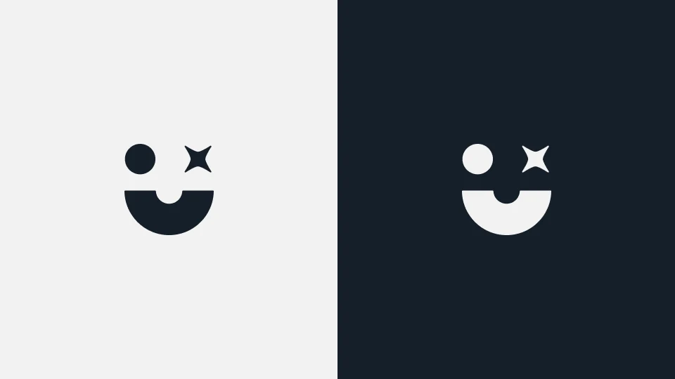
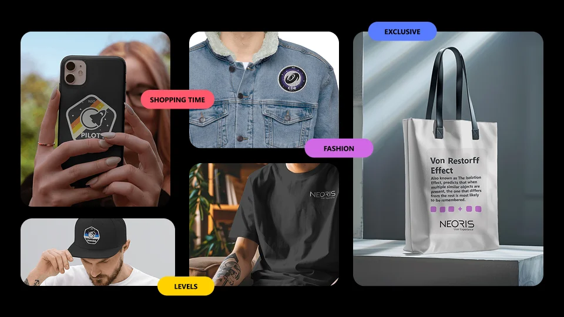
The UX Passport
A personal document where team members collect badges as they grow. Each badge corresponds to an achievement, a milestone or a contribution. The visual system uses space-themed titles (Neovice, Pilot, Strat, Senioris, Admirialis, Starman) blended with Neoris naming to define each role and level.
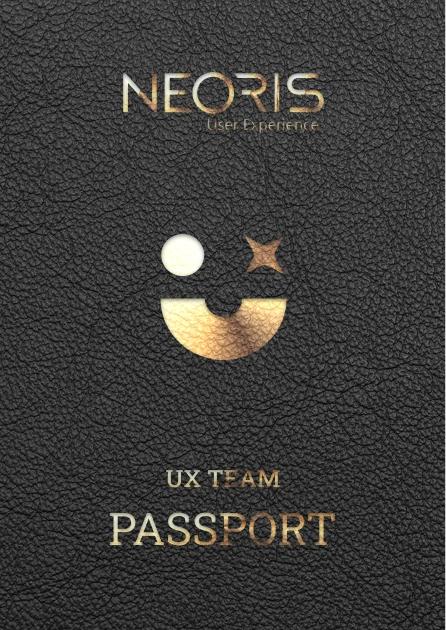
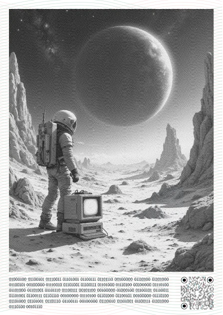
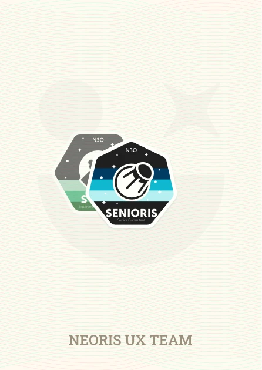
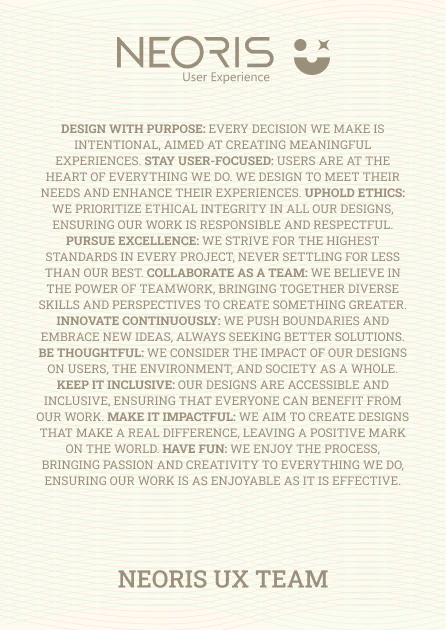
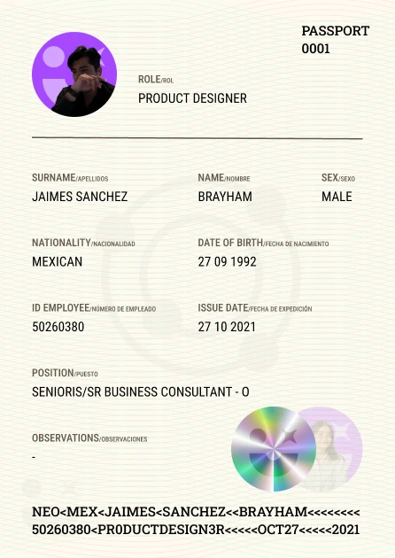
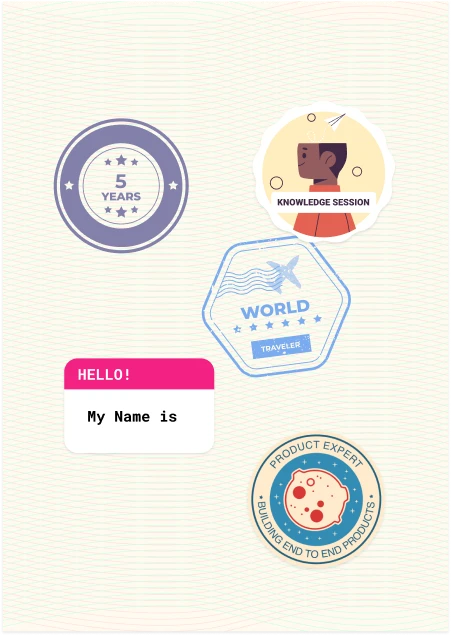
Survey and player types
To design the gamification system properly, I surveyed the team to understand what motivates them. Results showed 60.3% Achievers, 23.8% Socializers, 7.9% Killers, 6.3% Explorers. This data shaped which mechanics the system prioritized: goal-setting and recognition over competition.
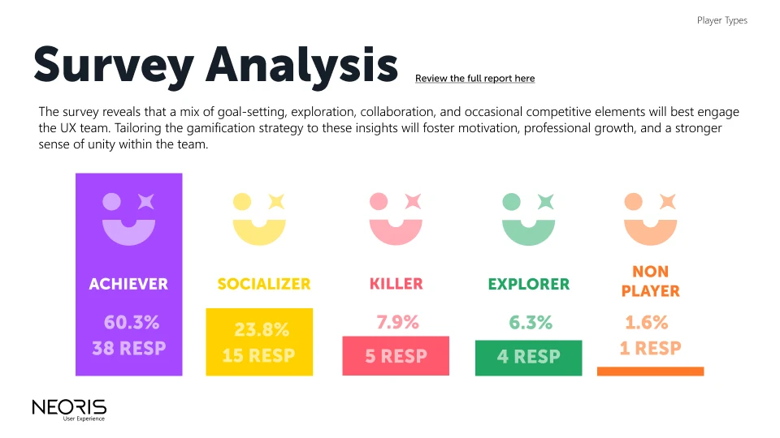
The brand was adopted immediately. Team members updated their profile photos to match the new visual style and started applying the branding in their daily work. The manifesto and ethics framework were shared with the entire team and are still referenced.
The gamification system (Passport and badges) was delivered as a complete proposal. Before it could be fully implemented, EPAM acquired Neoris and the organizational structure shifted. Despite the transition, the visual identity is still in use by the Neoris design team today, and elements of the proposal continue to be picked up for new internal initiatives.
The initiative also produced a visible spike in participation at the weekly UX team meeting.
What I take from this project isn't the brand book, but how it was built. A top-down identity gets ignored; this one was adopted because it didn't come from me alone. I worked closely with a core group of ~5 designers, opened the sessions to a good part of the team, and kept all ~50 in the loop, so the brand felt like the team's and not one person's. Facilitating that co-creation (turning many opinions into a clear direction) was the real design work, and I delivered it in three months while running the CEMEX project in parallel.
What I'd do differently: start the gamification pilot earlier. The proposal was solid, but having even one cycle of real badge distribution before the acquisition would have made the case for continuation much stronger. A system that's been used once is harder to shelve than one that exists only as a deck.